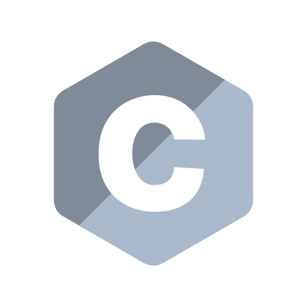

About
Hi, i am Valdotorium and welcome to my personal website!
I am really interested in computer science, from designing CPU architectures to Game Development with Pygame.
In the recent years, i started to try out various technologies and building projects, mostly games with them.
Those technologies include Python, Scratch, C and even Go.
Here is a quick overview of the technologies i use: (i like diagrams!)
Projects & Tools
-

JavaScript
I use JavaScript without frameworks to animate things on websites. A data-visualization website is the biggest i made with JS. The website can be used to turn data stored in CSV-files into animated diagrams.


CSS & HTML
Obviously, i use HTML and CSS to define the looks and structures of my websites, and even animating some stuff.
- 
C
I have experimented around a little bit with C and tried out raylib for graphical applications. As I want to learn a low level language someday, i will pick up learning C again or start learning C++.
- Most of my projects are linked in this section, for all my repos, see my GitHub profile.


Links
CreditsGet the font of this site from GoogleFonts here
Also, thanks to keyjk05 on GitHub for showing me how HTML and CSS work.
The icons used on the header of this site are from Iconoir, here is iconoirs license.
The logos of the tools i use are from a repository of bablubambal.
Connect with me
Thanks to:
Igros10 JoEragon TheJashShah Sky2202 NiNeu01 Blaise Code'n'ground MattBatWings GitHub Wakatime Haikei